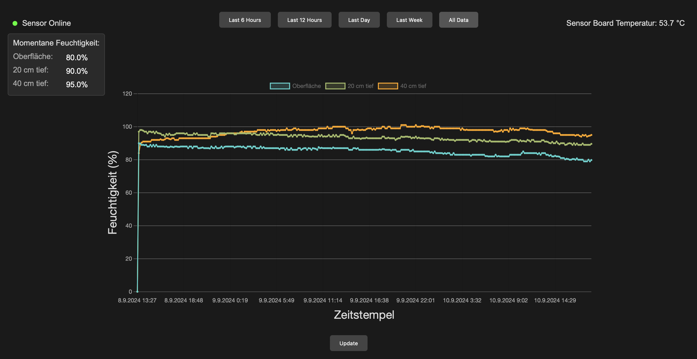
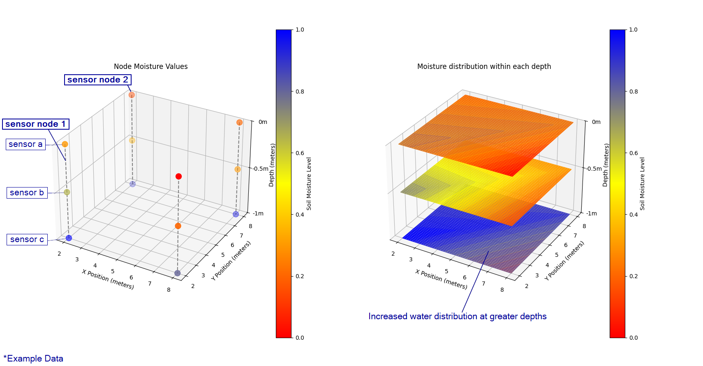

SOIL DATA MONITOR
This is a project I have been working on in my free time. The goal is to track and map soil data and display it using 2D and 3D visualizations. To achieve this, a grid of individual sensor nodes is used to measure the distribution of soil data. The data is then displayed to the user, allowing him to draw conclusions or automate processes. For example, watering behavior can be adjusted based on the knowledge of the water distribution in the soil.
The measured data can be viewed for different time periods and at different sensor nodes.
The goal is to map the entire ground data based on the individual sensor nodes. In this example, it can be observed that the moisture levels are higher at greater depths. However, there is still a variation in distribution within each depth layer.

Abschließender Text auf der Seite.